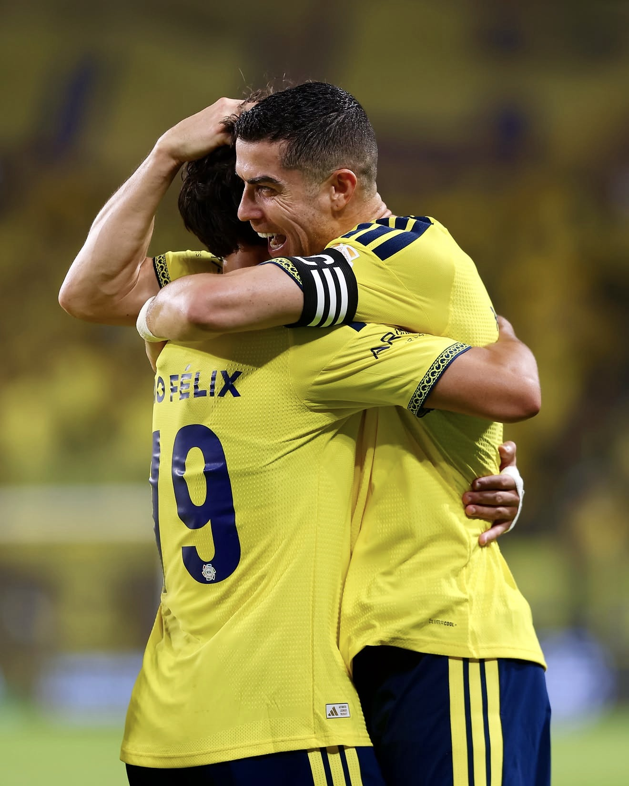

How Ronaldo's Portugal story ended
Cristiano Ronaldo has retired from international football with 146 goals, more than any man in history. The record is untouchable. The exit was anything but smooth.

Cristiano Ronaldo has retired from international football, ending 23 years with Portugal as the highest scorer and most-capped player in the history of the men's game.
The 41-year-old announced it on Thursday, 5 November 2026, in a video on Instagram captioned "Portugal estará sempre em mim": Portugal will always be in me. In it, he spoke of handing back the national team's number seven shirt, saying he never felt it belonged to him alone.
He said he leaves "with my head held high" and proud of the road he took. He thanked his teammates, his coaches, his family and Portuguese supporters around the world, and looked back on the sacrifices, the wins and the defeats along the way.
It is the end of one of the great international careers. It is also the end of a messy few weeks, and the two stories are hard to separate.
The summerAfter the World Cup
The questions started in the summer. Portugal went out of the 2026 World Cup in the round of 16, beaten 1-0 by Spain on 6 July, and Ronaldo confirmed that it had been his last World Cup.
He did not walk away then. Over the summer he held off on any decision about his international future, and he later admitted he had thought about leaving after the World Cup. After talks with the federation's president and the new coach, he said he still believed he could help the team.
Roberto Martínez stepped down after the defeat. On 10 July, the Portuguese Football Federation (FPF) named Jorge Jesus as the new head coach, a man who already knew Ronaldo well from Al Nassr and who made it clear he would welcome him back. Ronaldo stayed in the squad, and for a moment it looked like a smooth handover.
27 SeptemberThe night in Oslo
It unravelled on 27 September. Portugal beat Norway 2-1 in Oslo in the Nations League, and Ronaldo spent the whole match on the bench.
At full time, he walked straight to the dressing room. He did not join his teammates in applauding the Portugal fans who had travelled to Norway.
The two men's accounts of what went wrong differ. Ronaldo says Jesus told him he would come on, so he began warming up, only for the coach to change his mind. Jesus has insisted that keeping him on the bench was a tactical decision, not a broken promise.
Days later, with the squad based in Copenhagen ahead of a Nations League game against Denmark, Ronaldo left the camp. He has said he told the federation before he went.
The falloutA ban, a fine and an apology
The FPF opened disciplinary proceedings on 9 October. Ronaldo apologised to his teammates and supporters, admitted he should not have left, and said he would accept whatever punishment came while still wanting to play for Portugal.
On 19 October, the federation's disciplinary council handed him a 30-day suspension and a €255 fine. FPF president Pedro Proença said everyone at the federation wanted him back once it was resolved.
In the end, he chose not to come back.
2003 to 2026The record he leaves
Whatever the manner of the exit, the numbers are untouched. No man has scored more international goals, and no man has played more international matches.
The overall international scoring record belongs to Canada's Christine Sinclair, with 190 goals.
Euro 2016 is the title that defines his Portugal years. He went off injured early in the final in Paris, and Portugal still beat hosts France 1-0 after extra time for the country's first major trophy. The Nations League wins followed in 2019 and 2025, the second against Spain on penalties.
What nowWhat comes next
Ronaldo is not retiring from football. He plays on at Al Nassr in Saudi Arabia, and the chase for 1,000 career goals goes on without international matches to help it along.
The Ronaldo name has not left Portugal's set-up, either. His son, Cristiano Jr, earned his first call-up to Portugal's under-15s in May 2025 and to the under-16s that October.
For Portugal, it is a strange new beginning. For the first time since 2003, the national team will plan for a future without Cristiano Ronaldo in it, and the number seven shirt he spoke of handing back is waiting for someone brave enough to take it.
Sources
- ESPN: Ronaldo retires after fall-out with Jorge Jesus (5 Nov 2026)
- Sky Sports: Ronaldo retires after 23-year Portugal career (5 Nov 2026)
- Bloomberg / Press Association: Ronaldo retires from international football (5 Nov 2026)
- Business Standard: Ronaldo announces retirement from international football
- OneFootball: Ronaldo announces international retirement
- Sky Sports: Ronaldo considered international retirement after the World Cup (24 Sep 2026)
- Al Jazeera: Ronaldo banned for 30 days and fined (19 Oct 2026)
- ESPN: Disciplinary case opened after national team walkout (10 Oct 2026)
- Gulf News: Portugal beat Norway 2-1 in Oslo (27 Sep 2026)
- TNT Sports: Jesus calls benching Ronaldo a tactical decision
- Yahoo Sports: Portugal coach explains the Norway decision
- Onmanorama: Portugal appoint Jorge Jesus after World Cup exit (10 Jul 2026)
- Free Press Journal: Spain beat Portugal 1-0 in the round of 16
- Guinness World Records: Most international goals (female), Christine Sinclair
- CBS Sports: Portugal overcome Ronaldo injury to win the Euro 2016 final
- Arab News: Portugal beat Spain on penalties to win the Nations League (2025)
- beIN Sports: Cristiano Jr's first Portugal U-16 call-up (Oct 2025)